Guilds War
Noble Party Guilds War, un Evento ideato da NobleBrassMan e organizzato da BOXALMATCH. [Torna alla Home] Noble Party Guilds War, an Event conceived by NobleBrassMan and organized by BOXALMATCH. [Back to Home]
❮
Scontri conclusi, azioni mozzafiato e tanto altro! Guarda i nostri contenuti sul nostro canale Instagram e YouTube. Inoltre Leggi le Chronicles per capire questa sequenza di immagini relative alle notizie recenti. Concluded battles, breathtaking action and much more! Check out our content on our Instagram and YouTube channel. Also read the Chronicles to understand this sequence of images related to recent news.


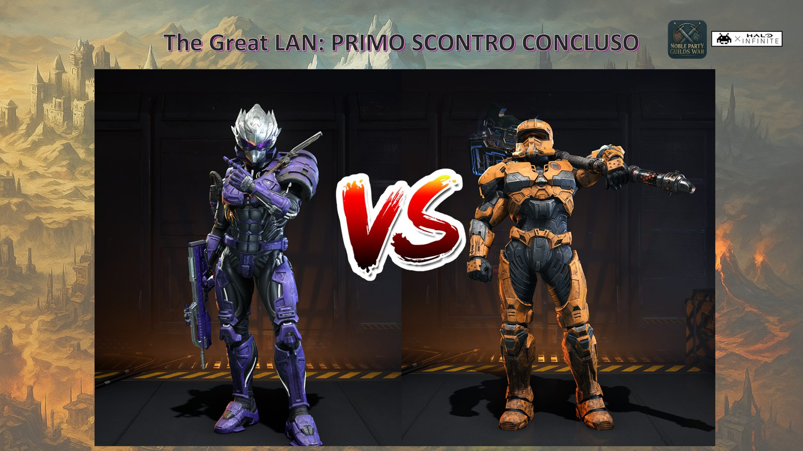
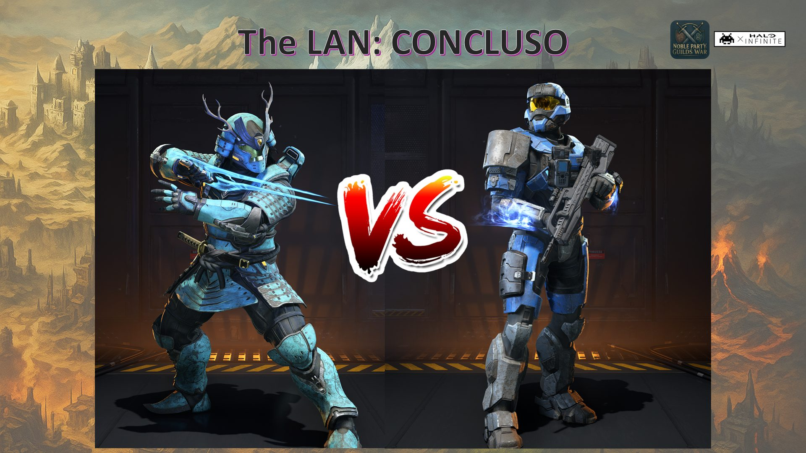

Noble Party Guilds War, un Campionato su Halo Infinite per rivivere la storia delle Guerre di Otto Gilde appartenenti alla stessa Famiglia. 🤝SCEGLI la tua Gilda 🤺FORGIA una nuova leggenda 🏆conquista la VITTORIA! Noble Party Guilds War, a Championship on Halo Infinite reliving the story of the Wars of Eight Guilds belonging to the same Family. 🤝CHOOSE your Guild 🤺FORGE a new legend 🏆claim VICTORY!
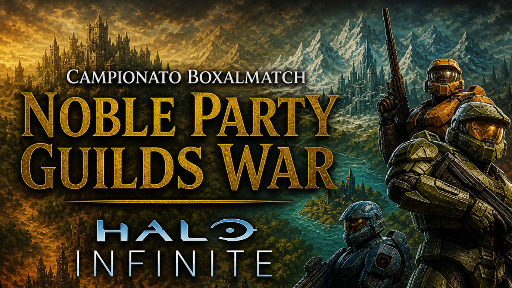
Sei pronto per questa avventura? Noble Party Guilds War, un Evento ideato da NobleBrassMan e organizzato da BOXALMATCH.
Un Campionato su Halo Infinite (Xbox Series X e PC) che riscrive una storia fantasy di una famiglia nel Multiverso (della Forgia).
Infinite possibilità di scontro dove vecchi e nuovi giocatori si uniscono in squadre e combattono fra loro.
Immergiti in un gioco che permette qualsiasi sfida immaginaibile per divertirsi insieme e aggiungere un pizzico di competitività.
Ad ogni Guerra, unisciti a una delle 8 Squadre, ottieni punti e vinci! Questo Campionato raccoglie +80 mappe, +20 modalità, +10 giochi sketch e molto altro.
La variabile tempo per questo campionato non esiste: l'evento evolve sulla sola volontà dei partecipanti stessi. L'evento inizia quando una prima Guerra viene conclusa:
potrebbe cominciare come potrebbe non cominciare mai. Le Guerre non hanno un ordine cronologico.
L'evento si conclude quando tutte le Guerre della Campagna Ufficiale sono concluse: potrebbe finire un giorno, oppure lasciato a metà per sempre con Guerre ancora da concludersi.
There is no time variable in this championship: the event evolves purely on the will of the participants themselves. It begins when a first War is concluded: it might start, and it might never start at all. The Wars follow no chronological order. The event ends when every War of the Official Campaign is concluded: it might finish one day, or be left half done forever with Wars still to be settled.
Ready for this adventure? Noble Party Guilds War, an Event conceived by NobleBrassMan and organized by BOXALMATCH.
A Championship on Halo Infinite (Xbox Series X and PC) rewriting a fantasy story of a family in the (Forge) Multiverse.
Infinite matchup possibilities where old and new players team up and fight each other.
Dive into a game that allows any imaginable challenge to have fun together and add a pinch of competitiveness.
With every War, join one of 8 Teams, earn points and win! This Championship features +80 maps, +20 modes, +10 sketch games and much more.
There is no time variable for this championship: the event evolves solely on the participants' own will. The event begins when a first War is concluded:
it might start, or it might never start. The Wars have no chronological order.
The event ends when all the Wars of the Official Campaign are concluded: it might end one day, or be left half-finished forever with Wars still to be concluded.
Questi sono i partecipanti di Noble Party Guilds War. Non ci sono scadenze per unirsi a questo Campionato: invita nuovi giocatori che saranno classificati come Leaders o Mercenari. These are the participants of Noble Party Guilds War. There are no deadlines to join this Championship: invite new players who will be classified as Leaders or Mercenaries.
| Qnt Qty | ClasseClass | GiocatorePlayer |
|---|---|---|
| 8 | Leaders Principali (contano come Leaders)Main Leaders (count as Leaders) | NobleBrassMan, KarmicScroll, SensibleSwine, Rambaudo, Hernicopter, Drius, SlickColt, PuffoKiller. |
| 2 | Leaders | TrimRex, DeadRick. |
| 19 | MercenariMercenaries | Pino’s Carrot, Sootz, Tigrozzo, Ifrid, Flying WC, Glimpse of Nature, Pennywise, Joe Moo, Bibobio, Clavuss, Apocal, Aerostokes, Deferent Skate, SoCrem, Sandyokhan, Spartan93, Patrifu, GigatzuMuiri, Svezio91. |
Il Campionato si conclude quando tutte le Guerre di questa Campagna Ufficiale sono concluse. Una Guerra si conclude esponendo il punteggio finale. Una Guerra corrisponde a 4 partite. Conclusa una partita: il punteggio è 1 per la Gilda o Armata che vince (quindi fino ad un massimo di 4 punti per Guerra) e 0 per quella che perde. Il Capitolo 5 ha due partite obbligatorie (Dinastia e Il Giorno Maledetto) per questa ultima Guerra dove tutte le Gilde parteciperanno. The Championship ends when all the Wars of this Official Campaign are concluded. A War ends by revealing the final score. A War corresponds to 4 matches. Once a match is over: the score is 1 for the Guild or Army that wins (so up to a maximum of 4 points per War) and 0 for the one that loses. Chapter 5 has two mandatory matches (Dynasty and The Cursed Day) for this final War in which all Guilds will take part.
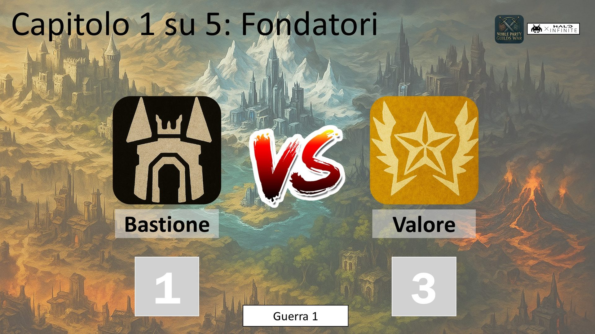
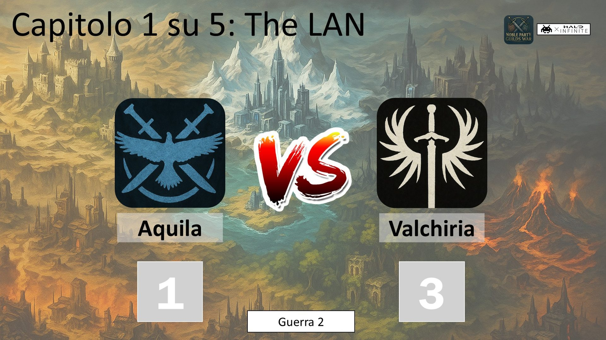
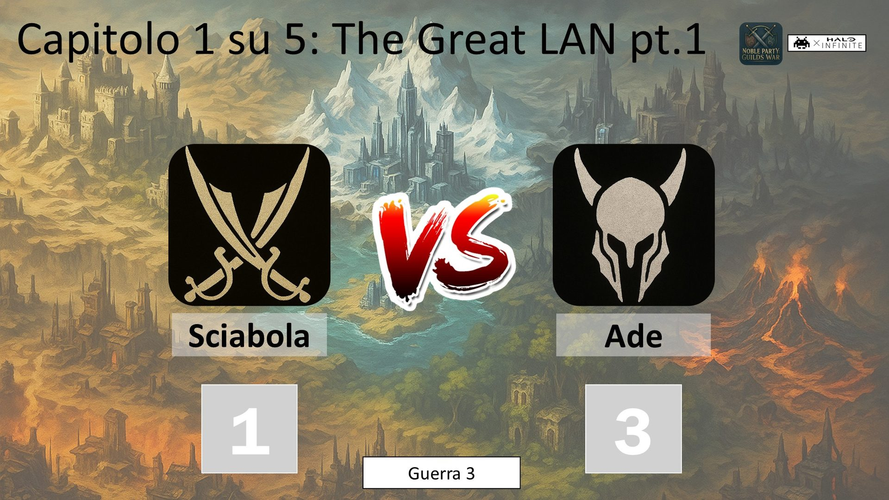
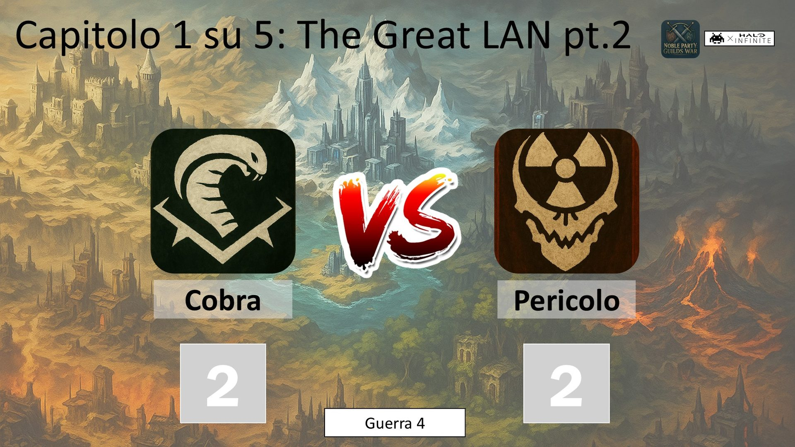
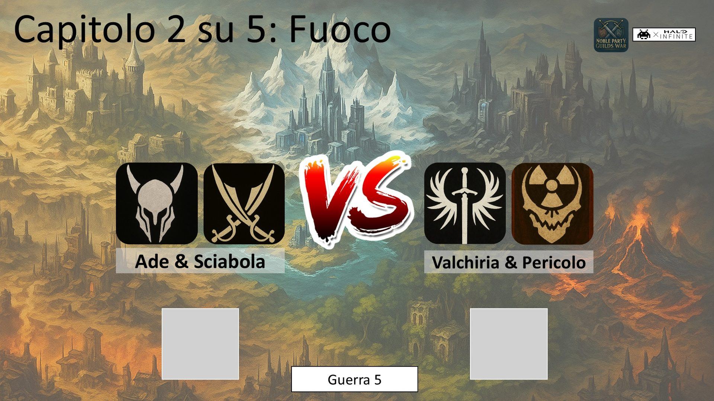
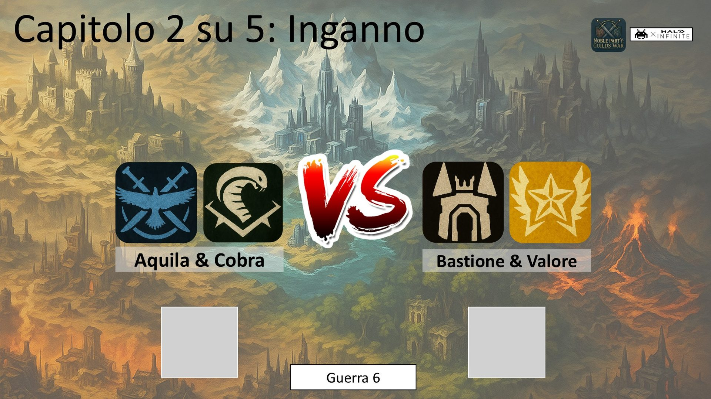
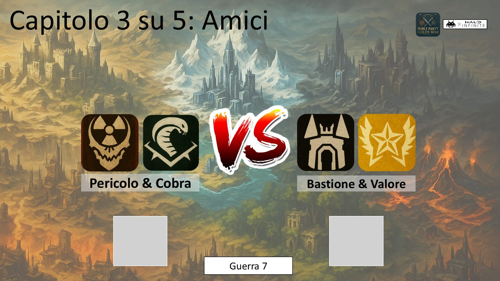
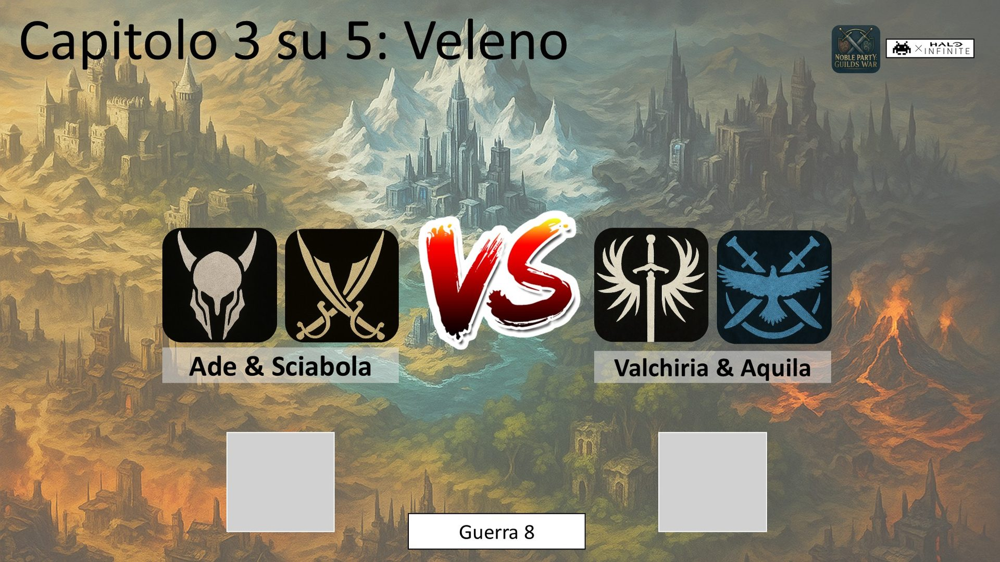
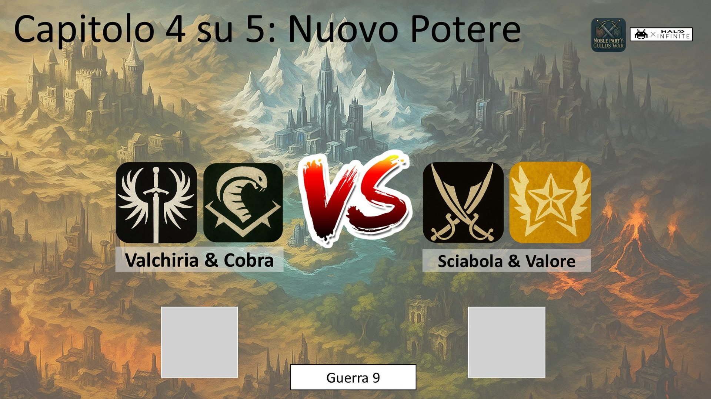
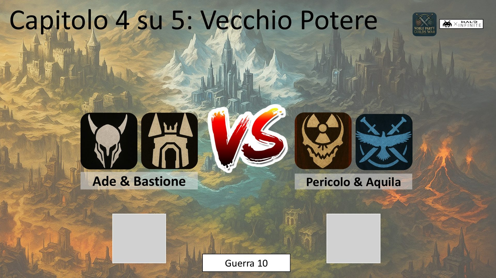
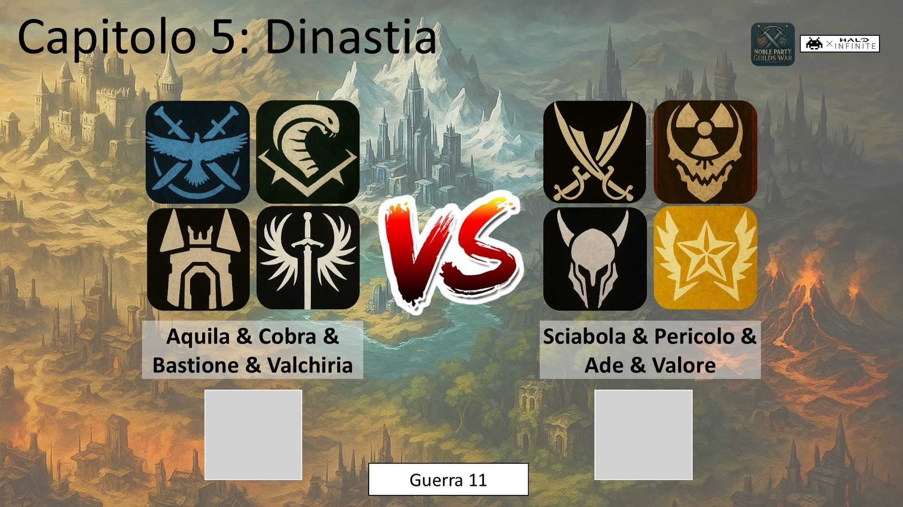
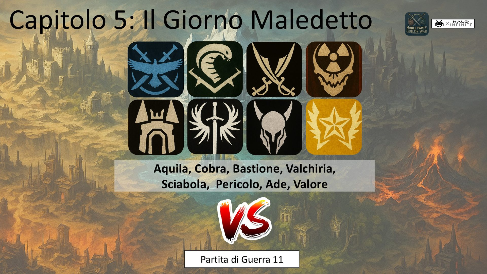
La Roadmap del Campionato. Sguardo alle milestones della Campagna Ufficiale. The Championship Roadmap. A look at the Official Campaign's milestones.
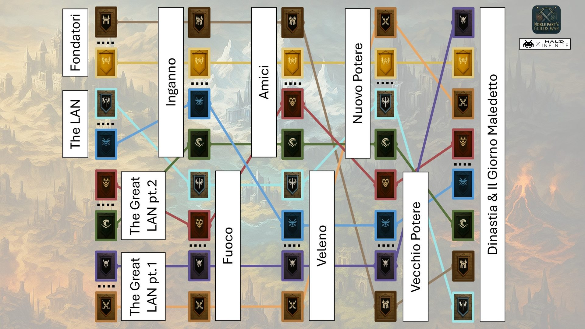
La Roadmap della Side Quest di Ciascuna Gilda. Sguardo agli Slots della Campagna Side Quests intrapresa da ciascuna Gilda. A differenza della Campagna Ufficiale dove un Capitolo può includere più Guerre, qui: 1 Capitolo = 1 Guerra = 1 Slot. Quindi Slots nome intercambiabile con Guerre o Capitoli. The Roadmap of Each Guild's Side Quest. A look at the Slots of the Side Quests Campaign undertaken by each Guild. Unlike the Official Campaign where a Chapter can include multiple Wars, here: 1 Chapter = 1 War = 1 Slot. So "Slots" is interchangeable with "Wars" or "Chapters".
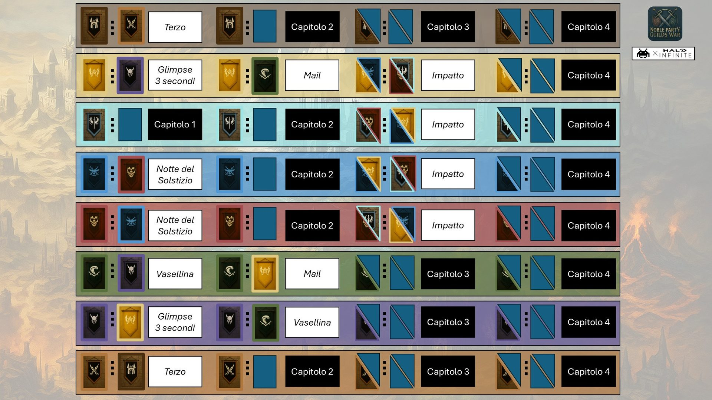
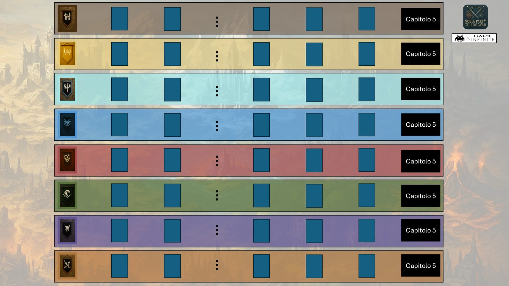
Guerre dalla Campagna Ufficiale. Non esiste un ordine temporale delle Guerre, tranne per la Guerra a Otto Gilde che viene svolta come ultima e chiude il Campionato. Wars from the Official Campaign. There is no chronological order to the Wars, except for the Eight-Guild War, which is held last and closes the Championship.
| Gilda (o Armata) 1Guild (or Army) 1 | RisultatoResult | Gilda (o Armata) 2Guild (or Army) 2 |
|---|---|---|
| Aquila | 1-3 | Valchiria |
| Ade | 3-1 | Sciabola |
| Cobra | 2-2 | Pericolo |
| Bastione | 1-3 | Valore |
| Sciabola & Ade | Valchiria & Pericolo | |
| Aquila & Cobra | Bastione & Valore | |
| Aquila & Valchiria | Sciabola & Ade | |
| Bastione & Valore | Cobra & Pericolo | |
| Valore & Sciabola | Cobra & Valchiria | |
| Ade & Bastione | Pericolo & Aquila | |
| Aquila & Cobra & Bastione & Valchiria | Sciabola & Pericolo & Ade & Valore |
Guerre dalla Campagna Side Quests. I partecipanti possono usare o programmare i loro Slots/Guerre: La programmazione di una o più Slots/Guerre non obbliga nessun ordine temporale. Wars from the Side Quests Campaign. Participants can use or schedule their Slots/Wars: scheduling one or more Slots/Wars does not require any chronological order.
| Gilda (o Armata) 1Guild (or Army) 1 | RisultatoResult | Gilda (o Armata) 2Guild (or Army) 2 |
|---|---|---|
| Ade | 1-3 | Valore |
| Pericolo | 3-1 | Aquila |
| Ade | 3-1 | Cobra |
| Pericolo & Valchiria | 2-2 | Aquila & Valore |
| Sciabola | 0-4 | Bastione |
| Valore | 3-1 | Cobra |
| - | X - X | - |
👉 Definizione di Irripetibilità: quando una qualsiasi Gilda propone una nuova Guerra per la sua Campagna Side Quests, deve controllare che non è avvenuta precedentemente o già programmata (inclusa la Campagna Ufficiale). 👉 Per principio di irripetibilità, ogni Guerra può essere narrata una sola volta nella Campagna Side Quests della Gilda che la propone: nei Capitoli 1–2 per scontri 1v1, nei Capitoli 3–4 per scontri 2v2 e nel Capitolo 5 per scontri 3v3. La stessa Guerra appare pure nella Side Quest di ogni Gilda partecipante. Nuove Guerre non possono avere le stesse combinazioni di Gilde o Armate ripetute in altri Capitoli; tuttavia, una o più Gilde che devono completare gli Slot 1-2-3-4-5, possono coinvolgere anche Gilde che hanno già esaurito i propri Slot, pubblicando la Guerra solo nelle Campagne Side Quest delle Gilde che hanno ancora Capitoli disponibili. 👉 Qualsiasi Capitolo di qualsiasi Campagna Side Quest concluso dopo la fine del Campionato non viene considerato per gli Awards. (Completa la tua Campagna Side Quest prima che il Campionato finisca!) 👉 Definition of Non-Repeatability: whenever any Guild proposes a new War for its Side Quests Campaign, it must check that it hasn't already happened or already been scheduled (including in the Official Campaign). 👉 Under the non-repeatability principle, each War can be told only once in the Side Quests Campaign of the Guild proposing it: in Chapters 1–2 for 1v1 matchups, in Chapters 3–4 for 2v2 matchups, and in Chapter 5 for 3v3 matchups. The same War also appears in the Side Quest of every participating Guild. New Wars cannot repeat the same Guild or Army combinations used in other Chapters; however, one or more Guilds that still need to complete Slots 1-2-3-4-5 may also involve Guilds that have already used up their Slots, by publishing the War only in the Side Quest Campaigns of the Guilds that still have Chapters available. 👉 Any Chapter of any Side Quest Campaign concluded after the end of the Championship is not counted toward the Awards. (Finish your Side Quest Campaign before the Championship ends!)
| VoceItem | Campagna e Side QuestsCampaign and Side Quests | CampagnaCampaign | Side Quests |
|---|---|---|---|
| Totale Partite GiocateTotal Matches Played | 40 | 16 | 24 |
| Totale Guerre GiocateTotal Wars Played | 10 | 4 | 6 |
| Tutte le Guerre NPGWAll NPGW Wars | 51 | 11 | 40 |
| Tradotto in Partite NPGWTranslated into NPGW Matches | 204 | 44 | 160 |
| Evento Completato alEvent Completed at | 19,61% | 36,36% | 15,00% |
Il numero di scontri possibili segue la formula: The number of possible matchups follows the formula:
\(\mathrm{Numero\ Scontri}(N,G) = \dfrac{\binom{N}{G}\,\binom{N-G}{G}}{2}\)\(\mathrm{Number\ of\ Clashes}(N,G) = \dfrac{\binom{N}{G}\,\binom{N-G}{G}}{2}\)
Nel Nostro Campionato, N sono le Gilde quindi 8, e questa formula rappresenta il numero di modi per estrarre due squadre da G Gilde ciascuna (quindi G può essere 2,4,6,8), senza ordine tra le due squadre e creando scontri unici (grazie alla divisione per 2). La Campagna e le Side Quests non permettono tutte le combinazioni possibili ma limitano il Campionato a soli 51 scontri (invece di 553). In Our Championship, N is the number of Guilds, so 8, and this formula represents the number of ways to draw two teams of G Guilds each (so G can be 2, 4, 6, 8), with no order between the two teams and creating unique matchups (thanks to the division by 2). The Campaign and Side Quests don't allow every possible combination but limit the Championship to just 51 matchups (instead of 553).
| Numero di Gilde per Guerra (G)Number of Guilds per War (G) | Totale Guerre PossibiliTotal Possible Wars | NPGW CampagnaCampaign | NPGW Side Quest | NPGW TOTAL |
|---|---|---|---|---|
| 2 | 28 | 4 | 16 | 20 |
| 4 | 210 | 6 | 16 | 22 |
| 6 | 280 | 0 | 8 | 8 |
| 8 | 35 | 1 | 0 | 1 |
| (2,4,6,8) | 553 | 11 | 40 | 51 |

Prima di giocare ricordati di leggere il Regolamento. Before playing remember to read the Rules.

Gilda Ade, Gilda Aquila, Gilda Bastione, Gilda Cobra, Gilda Pericolo, Gilda , GuildSciabola, Gilda , GuildValchiria, Gilda , GuildValore. Guild Ade, Guild Aquila, Guild Bastione, Guild Cobra, Guild Pericolo, Guild Sciabola, Guild Valchiria, Guild Valore.

In questo luogo, i Mercenari attendono. Qui nascono alleanze, si stringono patti e i Leader scelgono chi marcerà con loro verso la prossima Guerra. Scopri i Mercenari su Agorà. In this place, the Mercenaries wait. Here alliances are born, pacts are sealed and Leaders choose who will march with them into the next War. Discover the Mercenaries on Agorà.

I Racconti di chi ha vissuto questo Campionato su Chronicles. The Tales of those who lived this Championship on Chronicles.
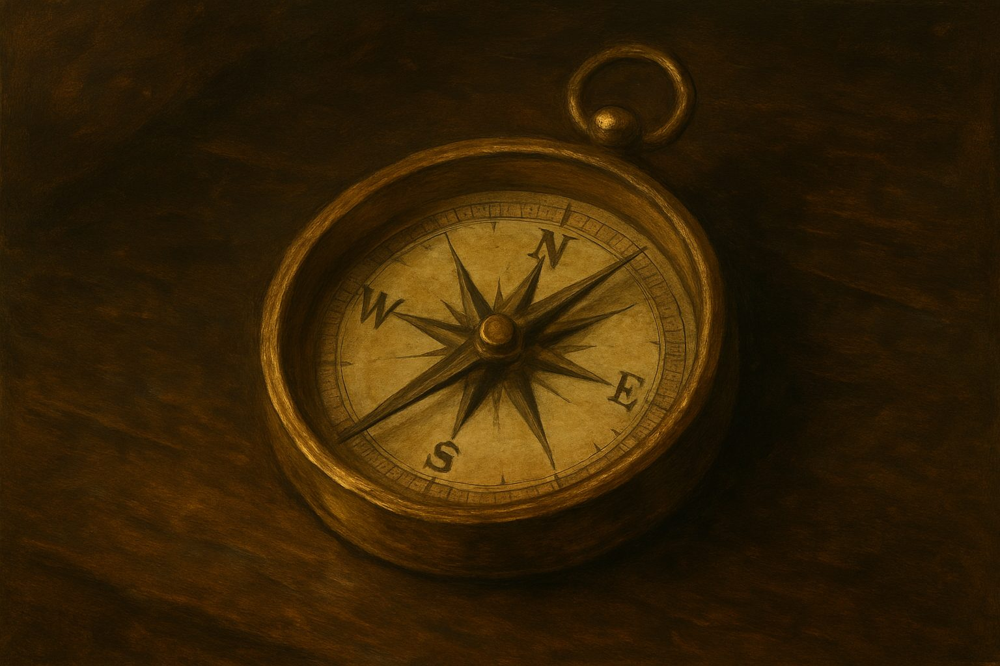
Ogni Gilda accede alla Backlog a piacere. Every Guild can access the Backlog at will.

I vincitori di questo Campionato e informazioni sul punteggio sono su Awards. The winners of this Championship and scoring information are on Awards.

Ispeziona i Punteggi del Campionato Scores. Inspect the Championship Scores on Scores.
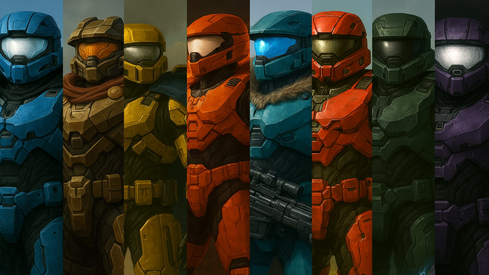
La storia dietro a questo Campionato la trovi su Aetherium Lore. The story behind this Championship is on Aetherium Lore.